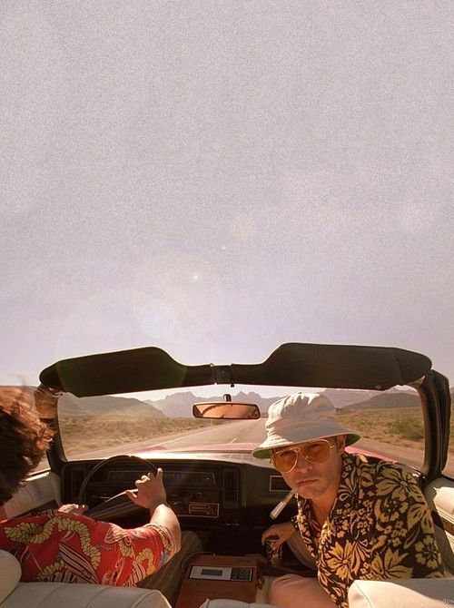

Фритрек и нулевой спринт: Подготовка к работе
<Back__to_code>

Это было самое начало пути. На этом этапе важно было проникнуться основами и настроиться на учёбу. И, возможно, подумать, как новые знания могут повлиять на ваше будущее.
У нас было: брошенный университет, 4 года в технической поддержке, 5 попыток войтиВ(IT), надежды начальства и гора амбиций и всего такого, всех цветов, а ещё работа, комуналка и прочие штуки взрослого человека. Не то чтобы это всё было нужно в поездке, но раз начал идти к повышению, то иди в своём увлечении до конца. Единственное, что меня беспокоило — это Red Bull. В мире нет никого более беспомощного, безответственного и безнравственного, чем человек в редбульном запое. И я знал, что довольно скоро мы в это окунёмся.